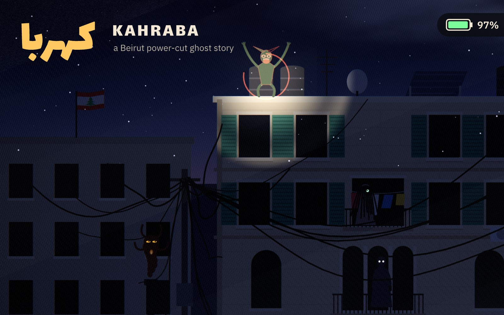
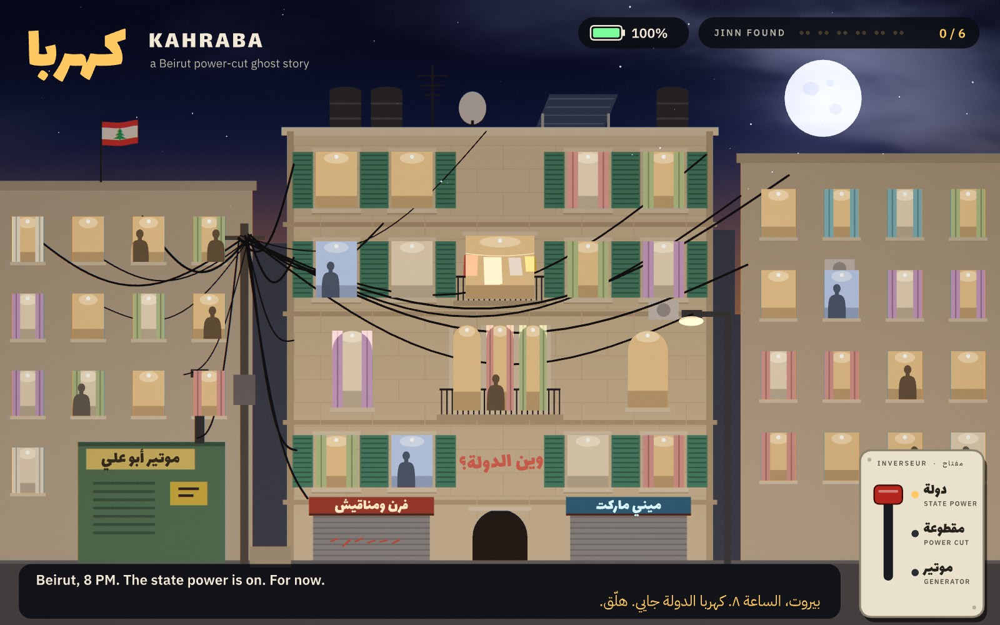
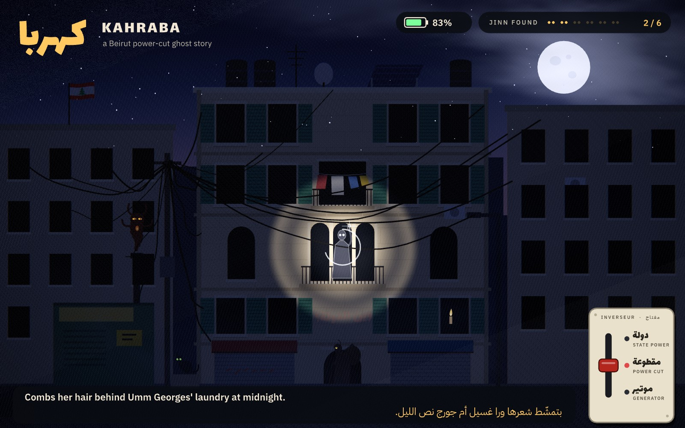
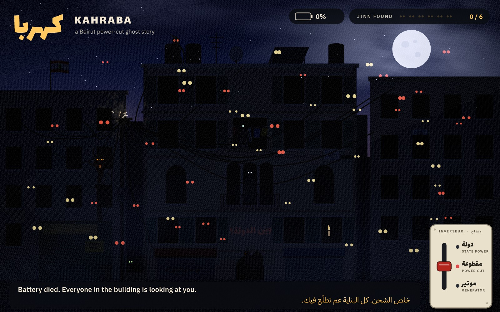
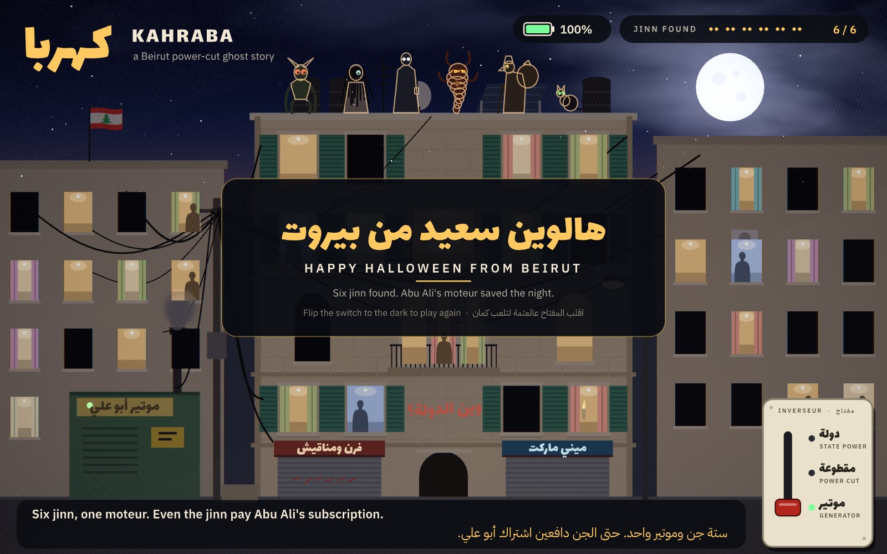

Play it locally: install the Rive CLI, clone the repo, run rive . in it. The pointer is your phone light. A hosted, playable link follows once the file is published with rive --publish=web, which signs the scripts and needs a Rive login.
The story
8 PM, and the state power (كهربا الدولة) is on. For now. The lights stutter the way every Beiruti knows they will, then the building goes dark. Six jinn live here, and in the cut you can see their eyes in the windows. Rest your light on a pair of eyes and the jinn behind them shows itself, reacts, and flees. Find all six and Abu Ali's neighbourhood generator (el moteur, 5 amps) coughs into life, and the six of them sit on the parapet together. Even the jinn pay the subscription. Keep the light on too long and the battery dies, and the whole building opens its eyes.
- THE GHOULالغولCrouches between the water tanks; lit, it rears up with its claws over its head.
- THE SI'LEWAالسعلوةCombs her hair behind Umm Georges' laundry; lit, she ducks behind the sheets.
- THE QARINAالقرينةYour shadow twin. She steps the other way, and lifts her own phone at you.
- THE IFRITالعفريتBorn in generator smoke. Lit, it burns, then goes back down the chimney.
- ABU KEESأبو كيسIn his tarboush, with a sack on his back. Something in the sack kicks.
- THE NEIGHBOURS' CATبسّة الجيرانArches, puffs its tail, bolts along the wall. Probably just a cat.
Stills





How it is made
Written in RML, Luau and WGSL with the Rive CLI, and rendered headless with it: every frame of the video is a rive --screenshot.
| Rive CLI + RML | The file is markup: text, HUD, cards, the inverter switch, the state machine and every keyed animation, verified with rive . --verify. |
|---|---|
| Scripting | A Luau layout script draws the street twice a frame (albedo and emission), runs the story clock, the torch, the six jinn and their reactions, sparks, smoke and the generator's rumble. |
| GPU Canvas | One WGSL pass lights it all: city glow or moonlight, window spill, the phone torch, a painted sky, bloom, fog, shake and grain. |
| Data binding | A view model carries power, phase, jinn found, battery, captions in English and Lebanese Arabic, and the street-light level that dims the neon signs. |
| State machine | Four layers: the lever, the story, one card per jinn found, and the battery warning. |
| Tuned by hand | Named ease curves for every keyed move, the lever's 240 ms overshoot and 3-frame plate knock, the card's elastic settle, the story's timing, the torch path, each jinn's pose and palette, all adjusted by eye against screenshots. |